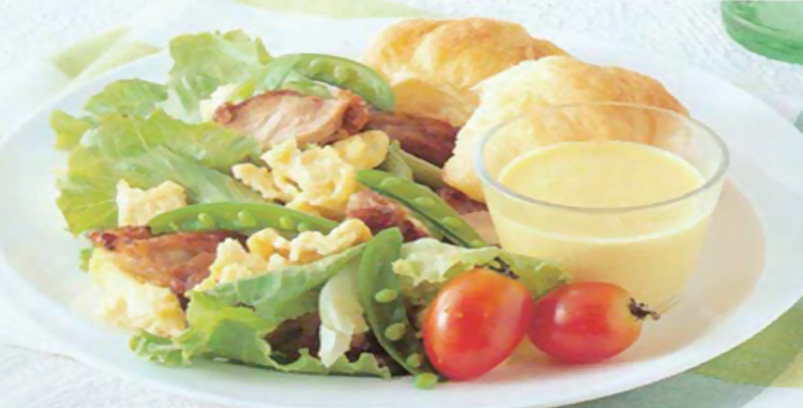
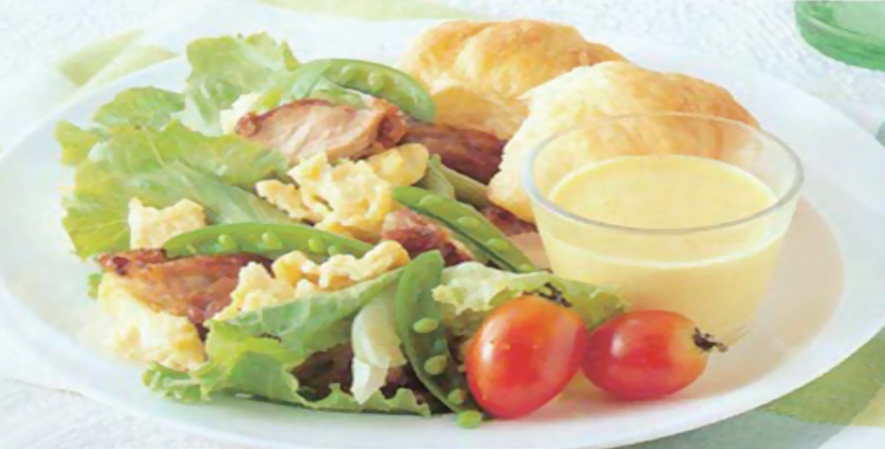

Appetizers and Salads
In a Western-style formal meal, the very first course served is the appetizer, which may also be called the starter. Generally, appetizers can be classified as hot or cold, solid or liquid appetizers, and the like.

In a Western-style formal meal, the very first course served is the appetizer, which may also be called the starter. Generally, appetizers can be classified as hot or cold, solid or liquid appetizers, and the like.
